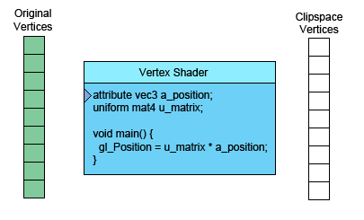

Ceci est la suite de WebGL2 - Les bases. Avant de continuer, je pense que nous devons discuter à un niveau fondamental de ce que WebGL et votre GPU font réellement. Il y a essentiellement 2 parties dans ce GPU. La première traite des sommets (ou flux de données) en sommets dans l’espace de découpe (clip space). La seconde dessine des pixels à partir de la première partie.
Quand vous appelez
gl.drawArrays(gl.TRIANGLES, 0, 9);
Le 9 signifie « traiter 9 sommets », donc voici 9 sommets en cours de traitement.

À gauche se trouvent les données que vous fournissez. Le vertex shader est une fonction que vous
écrivez en GLSL. Il est appelé une fois par sommet.
Vous faites quelques calculs et vous définissez la variable spéciale gl_Position avec une valeur de clip space
pour le sommet courant. Le GPU prend cette valeur et la stocke en interne.
En supposant que vous dessinez des TRIANGLES, chaque fois que cette première partie génère 3
sommets, le GPU les utilise pour former un triangle. Il détermine quels
pixels correspondent aux 3 points du triangle, puis rastérise le
triangle, ce qui est un terme élaboré pour dire « le dessiner avec des pixels ». Pour chaque
pixel, il appellera votre fragment shader en lui demandant quelle couleur donner à ce pixel.
Votre fragment shader doit retourner un vec4
avec la couleur qu’il souhaite pour ce pixel.
Tout cela est très intéressant, mais comme vous pouvez le voir dans nos exemples jusqu’à ce point, le fragment shader dispose de très peu d’informations par pixel. Heureusement, nous pouvons lui en passer davantage. Nous définissons des « varyings » pour chaque valeur que nous voulons transmettre du vertex shader au fragment shader.
Comme exemple simple, transmettons directement les coordonnées de clip space calculées depuis le vertex shader au fragment shader.
Nous allons dessiner avec un simple triangle. En continuant à partir de notre exemple précédent, modifions notre rectangle en triangle.
// Remplir le buffer avec les valeurs qui définissent un triangle.
function setGeometry(gl) {
gl.bufferData(
gl.ARRAY_BUFFER,
new Float32Array([
0, -100,
150, 125,
-175, 100]),
gl.STATIC_DRAW);
}
Et nous ne devons dessiner que 3 sommets.
// Dessiner la scène.
function drawScene() {
...
// Dessiner la géométrie.
* gl.drawArrays(gl.TRIANGLES, 0, 3);
}
Ensuite, dans notre vertex shader, nous déclarons un varying en créant un out pour passer des données au
fragment shader.
out vec4 v_color;
...
void main() {
// Multiplier la position par la matrice.
gl_Position = vec4((u_matrix * vec3(a_position, 1)).xy, 0, 1);
// Convertir du clip space vers l'espace couleur.
// Le clip space va de -1.0 à +1.0
// L'espace couleur va de 0.0 à 1.0
* v_color = gl_Position * 0.5 + 0.5;
}
Et ensuite, nous déclarons le même varying comme in dans le fragment shader.
#version 300 es
precision highp float;
in vec4 v_color;
out vec4 outColor;
void main() {
* outColor = v_color;
}
WebGL va connecter le varying du vertex shader au varying du même nom et du même type dans le fragment shader.
Voici la version fonctionnelle.
Déplacez, mettez à l’échelle et faites pivoter le triangle. Remarquez que comme les couleurs sont calculées à partir du clip space, elles ne se déplacent pas avec le triangle. Elles sont relatives à l’arrière-plan.
Maintenant, réfléchissez-y. Nous ne calculons que 3 sommets. Notre vertex shader n’est appelé que 3 fois, donc il ne calcule que 3 couleurs, et pourtant notre triangle comporte de nombreuses couleurs. C’est pourquoi on l’appelle un varying (variable interpolée).
WebGL prend les 3 valeurs que nous avons calculées pour chaque sommet et, lors de la rastérisation du triangle, il interpole entre les valeurs que nous avons calculées pour les sommets. Pour chaque pixel, il appelle notre fragment shader avec la valeur interpolée pour ce pixel.
Dans l’exemple ci-dessus, nous partons de 3 sommets
| Sommets | |
|---|---|
| 0 | -100 |
| 150 | 125 |
| -175 | 100 |
Notre vertex shader applique une matrice pour translater, faire pivoter, mettre à l’échelle et convertir en clip space. Les valeurs par défaut pour la translation, la rotation et l’échelle sont translation = 200, 150, rotation = 0, échelle = 1,1, donc il n’y a en fait que la translation. Étant donné que notre backbuffer est 400x300, notre vertex shader applique la matrice et calcule ensuite les 3 sommets en clip space suivants.
| valeurs écrites dans gl_Position | ||
|---|---|---|
| 0.000 | 0.660 | |
| 0.750 | -0.830 | |
| -0.875 | -0.660 | |
Il les convertit également en espace couleur et les écrit dans le varying v_color que nous avons déclaré.
| valeurs écrites dans v_color | ||
|---|---|---|
| 0.5000 | 0.830 | 0.5 |
| 0.8750 | 0.086 | 0.5 |
| 0.0625 | 0.170 | 0.5 |
Ces 3 valeurs écrites dans v_color sont ensuite interpolées et passées au fragment shader pour chaque pixel.
Nous pouvons également passer plus de données au vertex shader, que nous pouvons ensuite transmettre au fragment shader. Par exemple, dessinons un rectangle composé de 2 triangles en 2 couleurs. Pour cela, nous allons ajouter un autre attribut au vertex shader pour pouvoir lui passer plus de données, et nous transmettrons ces données directement au fragment shader.
in vec2 a_position;
+in vec4 a_color;
...
out vec4 v_color;
void main() {
...
// Copier la couleur depuis l'attribut vers le varying.
* v_color = a_color;
}
Nous devons maintenant fournir des couleurs à WebGL.
// trouver où les données de sommet doivent aller.
var positionLocation = gl.getAttribLocation(program, "a_position");
+ var colorLocation = gl.getAttribLocation(program, "a_color");
...
+ // Créer un buffer pour les couleurs.
+ var buffer = gl.createBuffer();
+ gl.bindBuffer(gl.ARRAY_BUFFER, buffer);
+
+ // Définir les couleurs.
+ setColors(gl);
// configurer les attributs
...
+ // indiquer à l'attribut couleur comment extraire les données du ARRAY_BUFFER courant
+ gl.enableVertexAttribArray(colorLocation);
+ var size = 4;
+ var type = gl.FLOAT;
+ var normalize = false;
+ var stride = 0;
+ var offset = 0;
+ gl.vertexAttribPointer(colorLocation, size, type, normalize, stride, offset);
...
+// Remplir le buffer avec les couleurs pour les 2 triangles
+// qui forment le rectangle.
+function setColors(gl) {
+ // Choisir 2 couleurs aléatoires.
+ var r1 = Math.random();
+ var b1 = Math.random();
+ var g1 = Math.random();
+
+ var r2 = Math.random();
+ var b2 = Math.random();
+ var g2 = Math.random();
+
+ gl.bufferData(
+ gl.ARRAY_BUFFER,
+ new Float32Array(
+ [ r1, b1, g1, 1,
+ r1, b1, g1, 1,
+ r1, b1, g1, 1,
+ r2, b2, g2, 1,
+ r2, b2, g2, 1,
+ r2, b2, g2, 1]),
+ gl.STATIC_DRAW);
+}
Et voici le résultat.
Remarquez que nous avons 2 triangles de couleur unie. Pourtant, nous passons les valeurs dans un varying donc elles sont variées ou interpolées à travers le triangle. Il se trouve simplement que nous avons utilisé la même couleur pour chacun des 3 sommets de chaque triangle. Si nous donnons une couleur différente à chaque sommet, nous verrons l’interpolation.
// Remplir le buffer avec les couleurs pour les 2 triangles
// qui forment le rectangle.
function setColors(gl) {
// Donner une couleur différente à chaque sommet.
gl.bufferData(
gl.ARRAY_BUFFER,
new Float32Array(
* [ Math.random(), Math.random(), Math.random(), 1,
* Math.random(), Math.random(), Math.random(), 1,
* Math.random(), Math.random(), Math.random(), 1,
* Math.random(), Math.random(), Math.random(), 1,
* Math.random(), Math.random(), Math.random(), 1,
* Math.random(), Math.random(), Math.random(), 1]),
gl.STATIC_DRAW);
}
Et maintenant, nous voyons le varying interpolé.
Pas très spectaculaire, j’imagine, mais cela démontre l’utilisation de plus d’un attribut et le passage de données d’un vertex shader à un fragment shader. Si vous regardez les exemples de traitement d’image, vous verrez qu’ils utilisent aussi un attribut supplémentaire pour passer les coordonnées de texture.
Les buffers sont le moyen d’envoyer des données de sommet et d’autres données par sommet au
GPU. gl.createBuffer crée un buffer.
gl.bindBuffer définit ce buffer comme le buffer sur lequel travailler.
gl.bufferData copie des données dans le buffer courant.
Une fois les données dans le buffer, nous devons indiquer à WebGL comment en extraire les données et les fournir aux attributs du vertex shader.
Pour cela, nous demandons d’abord à WebGL quels emplacements il a attribués aux attributs. Par exemple, dans le code ci-dessus, nous avons
// trouver où les données de sommet doivent aller.
var positionLocation = gl.getAttribLocation(program, "a_position");
var colorLocation = gl.getAttribLocation(program, "a_color");
Une fois que nous connaissons l’emplacement de l’attribut, nous émettons 2 commandes.
gl.enableVertexAttribArray(location);
Cette commande indique à WebGL que nous voulons fournir des données depuis un buffer.
gl.vertexAttribPointer(
location,
numComponents,
typeOfData,
normalizeFlag,
strideToNextPieceOfData,
offsetIntoBuffer);
Et cette commande indique à WebGL d’extraire les données du buffer qui a été lié en dernier
avec gl.bindBuffer, combien de composantes par sommet (1 à 4), quel est le
type de données (BYTE, FLOAT, INT, UNSIGNED_SHORT, etc…), le stride
qui correspond au nombre d’octets à sauter pour passer d’une donnée à la
suivante, et un offset indiquant à quelle position dans le buffer se trouvent nos données.
Le nombre de composantes est toujours de 1 à 4.
Si vous utilisez 1 buffer par type de données, alors stride et offset peuvent toujours être à 0. 0 pour stride signifie « utiliser un stride qui correspond au type et à la taille ». 0 pour offset signifie commencer au début du buffer. Les définir à des valeurs autres que 0 est plus complexe et, bien que cela puisse avoir des avantages en termes de performances, cela n’en vaut pas la complexité à moins que vous ne cherchiez à pousser WebGL dans ses derniers retranchements.
J’espère que cela clarifie les buffers et les attributs.
Vous pourriez vouloir jeter un œil à ce diagramme d’état interactif pour une autre façon de comprendre comment WebGL fonctionne.
Passons ensuite aux shaders et GLSL.